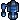

Check out Nero.java to see how a fully-functional bot can be written in 20 lines of Java!
Movement in this game is continuous, and all locations are expressed as floating point numbers. There are three types of terrain: grass, forest, and swamp. Different units move at different speeds in the different terrain types, and take damage differently too.
All combat is handled automatically: if a bot moves in range of an enemy or non-friendly city, it will attack it. There is no way, however, to choose a target. Bots will shoot at cities before enemy units. Therefore, all units need to do is to move about.
Every time an order is issued, such as MOVE, the unit will delay for a small time before beginning to execute. Therefore, it is important not to continually issue orders to a unit, as it will always be waiting to start execution.
Units heal over time. You can see a bar representing health under each unit (including cities).
The game ends when a team has lost all their cities. (Or, if the game lasts 6,000 time units, whoever has the most (cities * 100 + units) wins.)
The world is always 50x50 in size, and there are always 7 cities.
Note: there is no centralized command and control, nor any global view of the world. All units move autonomously and can only see their nearby environment.
A lot of what follows is more easily explained by looking at example code.
The classfile version must be 1.5 or lower. (If you're using Java 1.6, just make sure you set target to 1.5 when compiling.) If you use multiple classes, you must produce a JAR file for uploading to hacker.org. See the Multiple Classes section below.
Note: just because the final product is Java bytecode does not mean that you must program in Java. Lots of languages compile down or convert into Java bytecode. (See a list of 200 (not all appropriate).)
public Object think(double dx, double dy, double x, double y, boolean moving, int terrain,
int ourID, int ourType, double hp, double maxHP, double range, double time,
double[] objX, double[] objY, int[] objID, int[] objFaction, int[] objType, int[][] incomingRadio)
The "think" method returns an object, in which certain public members are instructions for moving the unit. The first is:
public int orderType;
This determines what the unit should do. Right now the options are:
| order | value | MOVE | 1 | STOP | 2 |
|---|
public double destX, destY;When a bot has a MOVE order, it will automatically continue moving in that direction, and then stop when it arrives, without the bot having to manually step the path. It will fire at any enemies it meets on the way. Note that destinations are slightly randomized to avoid bots sitting exactly on top of eachother.
The STOP order executes immediately.
Every time you issue a MOVE order, the unit will stop for 2.5 time units before executing the order. No "think" method will be called during this time.
public int build(double dx, double dy, double x, double y, int terrain, int id, int buildItem,
double hp, double maxHP, double time,
double[] objX, double[] objY, int[] objID, int[] objFaction, int[] objType, int[][] incomingRadio)
The "build" method returns an integer, which is the type of object to build (see table below). Units pop out near, but not precisely on, the city
|  | |||
|---|---|---|---|
| Name | Grunt | Hovercraft | Artillery |
| Type ID | 1 | 2 | 3 |
| Build Time | 32 | 36 | 40 |
| Vision | 12 | 12 | 12 |
| Range | 4.5 | 5.5 | 5 |
| Shields | 1 | 1 | 1 |
| Damage | 0.2 | 0.1 | 0.2 |
| Reload Time | 1 | 1 | 1.2 |
| Damage Type | Laser | Fire | Shell |
| Damage on Swamp | 2x | 0.5x | 2x |
| Damage in Forest | 0.7x | 2x | 0.5x |
| Laser Damage | 1x | 2.5x | 1x |
| Fire Damage | 0.4x | 1x | 2.5x |
| Shell Damage | 2.5x | 1x | 1x |
| Grass Movement | 1x | 0.7x | 0.8x |
| Swamp Movement | 0.1x | 0.9x | 0.05x |
| Forest Movement | 0.7x | 0.1x | 0.1x |
Here's an example of how the damage modifiers work: let's say a Grunt attacks a Hovercraft, who is sitting in in forest. The Grunt does laser damage, which is 2.5x against Hovercraft. A Hovercraft in the forest takes 2x damage. So total damage is: 0.2 * 2.5 * 2 = 1.0. A Hovercraft has shields of 1.0, so this is enough to kill in one shot!
Neutral cities maintain a separate damage counter for each faction trying to take them over. In other words, if one guy is sitting there hammering away at a city, another team can't come in and get a lucky hit to take the city over: they have to do the full amount of damage themselves. Note: cities take the same amount of damage no matter the terrain.
The Artillery has a special property: when it shells a target, any enemy units standing nearby (within 2 units of distance) also get hit, for half the damage of the original barrage. This makes it the only unit with splash damage.
Please see the Herd.java example bot to see radio used in the game. This bot gathers a group of comrades around, and then sets off in a unified direction by communicating that direction over radio.
When a bot receives an incomingRadio parameter for "think" or "build", this is a multidimensional array. The first dimension is for the different radio signals coming in. The second dimension is 5 ints long. The first of these is the ID of the unit that originated the signal, and the next four ints are the signal itself. This lets you trace the origin of the signal by looking up the unit's position in the unit list that comes to the bot. Just remember to offset by one int when examining the signal.
The HackJVM comes with its own rt.jar (the bootstrap classes that Java provides by default, such as java.lang.Object and System). This is a very simplified stripped down version of Apache's Harmony runtime. It's only 100k. It can't do any advanced stuff like opening a socket (that would be bad!) or many kinds of I/O, but can handle basic types, exceptions, and some other simple things. You may create a java.util.Vector class if you wish -- other collections classes will come in the future. You can call System.out.println with a String argument. This can be useful if you need to debug your code running on HackJVM specifically.
Each bot instance gets its own class -- in fact, it gets its own JVM instance.
The hard limit for one bot to think is 1,000,000 instructions. This would mean that no other bot on that team would get a chance to think for the next ten ticks.
The simulator will allow you to run bots natively (not native in the normal sense of machine code, but native to the hosted JVM). Only do this for trusted code! There are two reasons to use this: it is approximately 600 times faster, and will allow you to debug your bot code. However, there are some important considerations. First, only trusted code should be run natively because there are no security protections: malicious code could wipe your hard drive. Second, bots may behave differently with respects to pseudo-randomness -- unlike with the HackJVM, there's no way to control entropy here. This may not matter to most people, however. Thirdly, there's no guarantee that the code will execute exactly the same as under the HackJVM. The raw bytecould _should_ do the same things, but it's vital to double-check with the HackJVM before submitting to make sure. Also, the runtime classes are very restricted with the HackJVM, so a bot that goes and uses a java util hashmap class will work fine running as native, but quickly hit a wall with HackJVM. Fourthly, under the HackJVM the code will timeout from an infinite loop. No such luck with native. Fifthly, there are some known but relatively obscure bugs in the HackJVM, so you have to check you don't hit one.
After hitting the Go button, a window called "Watch Bots" appears, and the game runs in this. Along the right-hand side, some metadata about the bots will display as they move, such as how many instructions they took to think on their last move. Along the bottom is a slider bar that controls the speed when you hit Go on this window (hit Fast to max it out).
By clicking the "Info" checkbox, you can see some basic information about the game. When you're running under the HackJVM, this info will include how many instructions your bots are taking up each cycle. Also, this will draw some circles on the game screen. The yellow circle represents the range of the bot's weapon, and the white circle shows how far it can see.
Before you can upload your bot, you must package the classes together into a single file. We use the standard JAR file for this purpose. JAR files contain a manifest file, which contains a list of attributes. For hacker.org, the only manifest attribute that counts is "Main-Class", which must be the fully-qualified class name of your main class (the one that contains "think".) For example, let's say your bot class is called "Bar", and it's in the "foo" package, then the "Main-Class" attribute would have a value of "foo.Bar".
The SDK contains an example of how to build a bot that uses multiple classes. This bot is called "LuckyClover." The source files can be found in /src/clover. The ant file (build.xml) in the main folder has a target called "jar-clover" which will produce the JAR file out of the Clover classes, along with the correct manifest. This bot is also an example of how you can return class objects for orders that aren't the bot's own class.